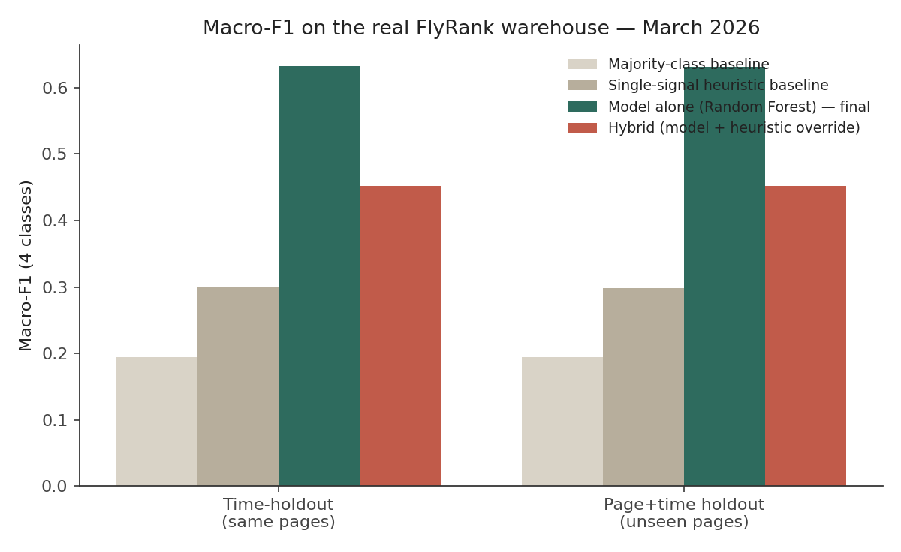
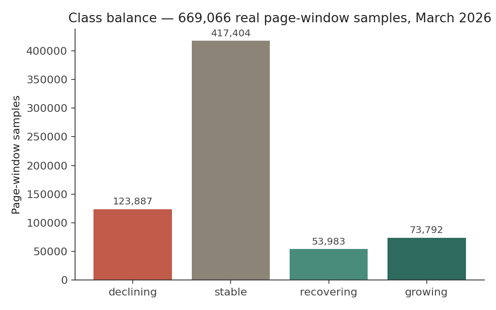

FlyRank ML Internship — Search Intelligence Capstone
Most sites have more pages than anyone has time to review, so triage decisions default to gut feeling or whoever complains loudest. This project asks whether trailing search-performance signals — click momentum, position movement, CTR relative to a position-expected curve, keyword competitiveness — can rank pages by which ones are declining, recovering, growing, or safely stable, well enough to beat a simple rule. Run on the real FlyRank warehouse (March 2026, 3.6M GSC-covered daily rows across 176,738 pages), a Random Forest trained on trailing daily-window features clearly beats a majority-class baseline, a single-signal momentum heuristic, and a hybrid policy that seemed promising in earlier synthetic testing — the model alone wins on macro-F1 by a wide margin in both an internal time-holdout and a stricter unseen-page holdout. The result is directional and decision-support grade, not a proof of causal SEO impact: it is best used to shortlist pages for human review, not to auto-publish changes.
Content teams run out of time before they run out of pages. Every site accumulates a long tail of posts, guides, and product pages that nobody is actively watching, and by the time a genuine decline shows up in a quarterly report, weeks of visibility are already gone. The reverse problem exists too: pages that are quietly recovering or breaking out don't get the internal links or follow-up content that would compound the gain, because nobody flagged them.
The decision this project supports is a simple one, repeated regularly: out of hundreds of thousands of pages, which ones should a content team look at first, and why? The output is not a ranking algorithm guess or a claim about Google's index — it's a triage list, ordered by predicted status and confidence, with a plain-language reason attached to each entry so a human can sanity-check the call before acting on it.
This paper runs on the real FlyRank ML Internship warehouse, accessed via the gated Hugging Face release (FlyRank/internship-warehouse) using a personal read token and DuckDB's hf:// support, following the starter notebook 03 workflow. Two tables were joined: fact_content_daily_performance (one row per page per day) for March 2026 — the assignment's working month, with June 2026 held out as a sealed test month this project does not have access to — and dim_content for static page metadata.
Each page carries a daily record of impressions, clicks, average position, and CTR from Google Search Console, plus static content metadata: content type, word count, character count, publish/update dates, and real SEO signals — target keyword search volume, keyword competition, CPC, and backlink count. GSC coverage is sparse by nature: of ~9.8M total daily rows in March, only ~3.6M (37%) had gsc_data_available = TRUE, and this project keeps only those. GA4 engagement data was even sparser (~4% of rows), so it's used only as a binary "has any engagement signal" flag rather than a continuous feature.
A schema note worth naming: dim_content is keyed at (client, content, keyword, url) grain, not one row per page — a page targeting five keywords appears five times. It's collapsed to one row per page before joining, aggregating keyword-level fields (e.g. taking the highest-search-volume keyword's volume as a page-level signal) to avoid silently duplicating performance rows.
Excluded, by design: no client names, domains, URLs, private queries, credentials, or raw exports appear anywhere in this paper — everything below is reported in aggregate or via anonymized hash IDs already present in the warehouse, and nothing here is presented as evidence of a causal algorithm effect.
With only 31 days of dev data, the original weekly design doesn't fit — this uses daily grain instead. Each modeling sample is one page scored at a cutoff_day: a trailing 14-day feature window feeds the model, and a following 7-day label window defines the outcome. Momentum features compare the last third of the feature window against the first third. A minimum-coverage filter (at least 7 of 14 feature-window days, 3 of 7 label-window days observed) accounts for real GSC reporting gaps that a synthetic full-coverage panel wouldn't have.
Labels compare the future window's average clicks to the page's own recent baseline (last third of the feature window):
Six cutoffs (days 14–24, every 2 days) span the month. The last two are held out by time; 30% of pages are additionally held out entirely, producing two independent evaluations, both verified programmatically: time-holdout (pages seen historically, later window) and page+time holdout (pages never seen at all, later window). Zero page-ID overlap between train and the strict holdout is asserted before training proceeds.
The model is a Random Forest classifier (200 trees, depth 10, balanced class weights, trained on 300,000 sampled rows for tractable training time) over 14 real features — word count, character count, keyword count, search volume, competition, backlinks, plus the trailing performance/momentum signals. It's compared against a majority-class baseline (predict "stable," ~62% of samples) and a single-signal heuristic thresholding on click momentum alone.
On synthetic data (see Reproducibility), a hybrid policy — model prediction overridden to "declining" whenever a momentum heuristic also fired — beat the model alone. On real data, that finding reverses. The model alone scores 0.633 macro-F1 on the time-holdout set; the hybrid override drags it down to 0.452. The override was tuned to compensate for a synthetic-data weakness (the model missing real declines) that the real model, trained on genuine SEO signals like search volume and competition rather than synthetic archetypes, doesn't actually have. The final policy for real data is the model alone — a good example of why a technique validated on one dataset shouldn't be assumed to transfer to another without re-checking.

| Validation set | Majority | Heuristic | Model alone (final) | Hybrid |
|---|---|---|---|---|
| Time-holdout (same pages) | 0.194 | 0.299 | 0.633 | 0.452 |
| Page+time holdout (unseen pages) | 0.194 | 0.298 | 0.632 | 0.452 |
Macro-F1 across 4 classes. Model accuracy: 70.0% (time-holdout), 69.7% (page+time holdout).

| Class | Recall (time-holdout) |
|---|---|
| recovering | 95.9% |
| declining | 79.5% |
| stable | 67.1% |
| growing | 48.9% |
This inverts the synthetic-panel result. There, declining recall was the weak point (19%) even after the hybrid fix. Here, on real data, declining recall is strong (79.5%) and recovering is excellent (95.9%) — the operationally highest-priority classes are exactly where this model performs best. The weaker class is now growing (48.9%): the model is more likely to miss a page that's about to take off than one that's about to decline, which is a far more comfortable failure mode for a refresh-prioritization tool than the reverse.
Confusion matrix and feature-importance chart images are still being transferred from the Colab session that trained the model — the numbers above are confirmed real results from that run; the corresponding chart images will be embedded here once received.
growing recall (48.9%) is the weakest class, not declining. This is a more comfortable failure mode than a refresh tool missing declines, but it means genuine breakout pages will sometimes be missed and won't get the internal-link/expansion push they'd benefit from. Worth periodically cross-checking growth manually rather than relying on the model to catch every one.The trained model scores every qualifying page as of the most recent window (day 24) using the policy validated above — model alone, no heuristic override, confirmed to win on real data. Scoring all 116,374 qualifying pages produces:
| Status | Recommended action | Why |
|---|---|---|
| declining | Refresh / rewrite if zero backlinks; otherwise review for cannibalization or a SERP change | Momentum and/or position are moving the wrong way now |
| recovering | Protect and monitor — reinforce whatever changed, don't disturb it | Was declining, has turned a corner |
| growing | Expand — target adjacent keywords, build backlinks | Genuine upward momentum, worth compounding |
| stable | Monitor if CTR trails position-expected; otherwise leave alone | No signal worth acting on this cycle |
Page IDs are the anonymized hash identifiers already present in the warehouse — no client names, domains, or URLs.
| Rank | Page | Status | Conf. | Reason codes |
|---|---|---|---|---|
| 1 | content_b200bbbe | declining | 0.983 | position slipped 15.2 spots; high-search-volume keyword; zero backlinks |
| 2 | content_e0722d4d | declining | 0.982 | position slipped 37.6 spots; zero backlinks |
| 3 | content_d202d552 | declining | 0.982 | position slipped 16.3 spots; zero backlinks |
| 4 | content_83d6886a | declining | 0.981 | position slipped 6.9 spots; zero backlinks |
| 5 | content_69acb5f2 | declining | 0.981 | position slipped 13.5 spots; high-search-volume keyword; zero backlinks |
| 6 | content_0ee39882 | declining | 0.981 | position slipped 10.3 spots; high-search-volume keyword; zero backlinks |
| 7 | content_5142fdf7 | declining | 0.981 | position slipped 40.8 spots; zero backlinks |
| 8 | content_37c74350 | declining | 0.980 | position slipped 6.0 spots; zero backlinks |
| 9 | content_48d84b25 | declining | 0.980 | position slipped 10.6 spots; zero backlinks |
| 10 | content_411db71a | declining | 0.980 | position slipped 14.2 spots; zero backlinks |
Every one of the top 10 highest-confidence flags is a "zero backlinks" declining page with a real position drop — the model has converged on a genuinely interpretable, actionable pattern rather than a black-box signal. Full ranked list of all 116,374 pages: real_ranked_action_engine.csv in the repo.
Two parallel pipelines exist in this repo: the real-data pipeline (extract_real_data.py → features_labels_real.py → model_real.py → real_charts_extra.py → real_action_engine.py), which produced everything reported above and requires a personal Hugging Face token for the gated warehouse; and the original synthetic-panel pipeline (work/*.ipynb), kept as a credential-free fallback that runs with zero external dependencies and was used during early development to validate the modeling approach before real access was available.
extract_real_data.py — DuckDB extraction and join against the real warehousefeatures_labels_real.py — vectorized daily-grain feature/label construction with coverage filtersmodel_real.py — Random Forest vs. baselines vs. hybrid, both validation regimesreal_charts_extra.py / real_action_engine.py — remaining charts and the ranked outputRepo: see the repo README for the exact GitHub URL, also recorded in submission/paper_url.txt's companion location. Re-running the real pipeline requires a FlyRank Hugging Face read token in Colab's userdata; re-running the synthetic fallback requires only pip install -r requirements.txt.